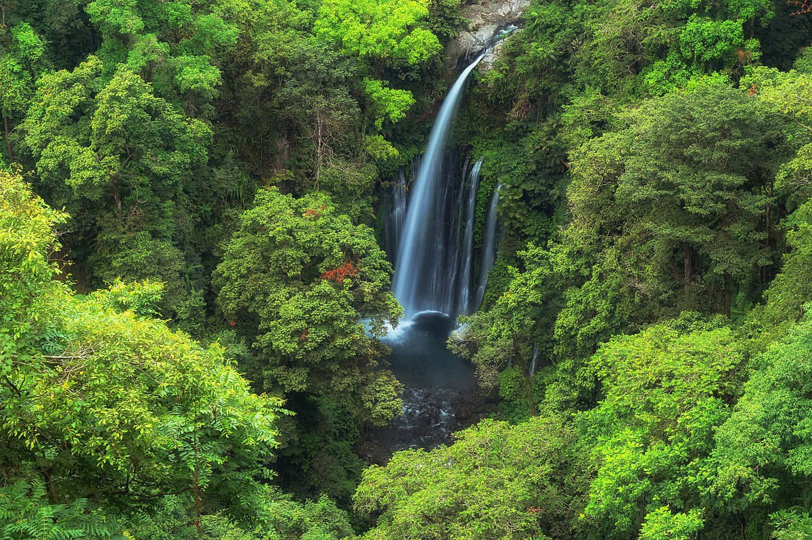
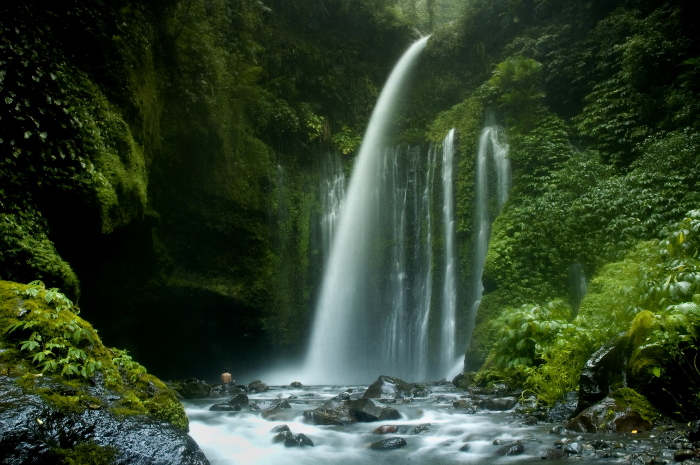

Post by dayat, Sunday 06 Juny 2018
Mengunjungi Air Terjun Tiu Kelep, Anda akan menemui air terjun yang mengaliri tebing yang bertingat. Tak hanya itu udara yang sejuk dan pemandangan yang hijau nan alami akan menyambut Anda. Pulau Lombok memang memiliki pesona wisata alam yang mengagumkan, yang menyatu dengan ritme yang menenangkan. Di kaki Gunung Rinjani terdapat beberapa wisata air terjun yang cukup terkenal. Diantaranya adalah Air Terjun Tiu Kelep. Air terjun ini mengalir membentuk satu aliran. Hembusan kabutnya memenuhi sekitar lembah, dan akan terasa sejuk ketika Anda berada di dekatnya.
Air Terjun Tiu Kelep terletak di sisi sebelah Utara di kaki Gunung Rinjani. Yang juga merupakan bagian dari jalur pendakian. Secara administratif, Air Terjun Tiu Kelep berada di Desa Senaru, sekitar 2,5 jam perjalanan dari Kota Mataram. Mengingat jaraknya yang cukup jauh, disarankan agar Anda menggunakan kendaran pribadi untuk mengunjungi wisata air terjun yang menakjubkan ini.
Aliran Air Terjun Sendang Gile sendiri mengalir melewati tebing setinggi 42 Meter. Tebing yang teraliri air tersebut bertingkat-tingkat, serta tertutup oleh dedaunan hijau dan tumuhan paku. Aliran air terjun yang menyatu dan melewati tebing yang tertutup rerimbunan tersebut membuat area di sekitarnya tertutup kabut tipis. Sesekali Anda akan melihat lengkungan pelangi di dekat air terjun. Aliran air dari Air Terjun Tiu Kelep kemudian mengalir menuju ke Air Terjun Sendang Gile.
Untuk mencapai Air Terjun Tiu Kelep, Anda harus berjalan kaki sejauh 45 Menit. Anda akan melewati sebuah tangga yang cukup curam. Setelahnya, Anda juga akan menyeberangi sungai yang cukup dangkal. Di sungai ini Anda akan merasakan kesejukan aliran air yang sangat bening. Anda juga akan menempuh jalan setapak, yang di sampingya terdapat sungai kecil dengan aliran air yang tenang.
Di sepanjang jalan menuju air terjun, Anda akan disuguhkan dengan pemandangan hutan lindung yang lebat. Hutan ini merupakan bagian dari Taman Nasional Gunung Rinjani. Mayoritas flora yang tumbuh di area ini adalah tumbuhan tropis. Seperti Pohon Bajur (Pterocarpus sp.), Pohon Ipil (Insia biyuga), Pohon Sentul (Sondarium), dan Pohon Jati (Tektona grandis). Meskipun lebat dan rimbun, Anda tidak perlu khawatir akan tersesat.
Petualangan Anda akan menjadi sempurna ketika tiba di lokasi Air Terjun Tiu Kelep. Air terjun ini cukup tinggi, yaitu sekitar 45 Meter. Alirannya yang cukup besar dan deras menimbulkan deburan yang cukup besar pula. Jika Anda tidak ingin basah, sebaiknya Anda memakai jaket anti air Anda. Tak jauh dari situ, Anda bisa menyaksikan sebuah pohon besar yang tumbuh di permukaan tebing.
Menurut masyarakat setempat, nama Tiu Kelep diambil dari bahasa Suku Sasak yang berarti “Kolam Terbang”. Air terjun ini dipercaya dapat menyembuhkan berbagai penyakit, serta membuat tampak awet muda. Masyarakat setempat juga percaya bahwa aliran air terjun akan semakin besar jika orang-orang disekitarnya berbicara semakin keras.
Suasana yang segar dan pemandangan yang indah ini akan membuat Anda betah berada di lokasi wisata Lombok. Namun pada perjalanan pulang, mampirlah sebentar ke Restoran Senaru. Restoran ini berada di ketinggian, sehingga Anda akan mendapatkan pemandangan yang berbeda sembari mencicipi hidangan khas Lombok. Di sini Anda akan disuguhkan dengan pemandangan hutan lindung yang lebat, serta tebing-tebing yang mengelilingi lokasi Air Terjun Tiu Kelep.
Sumber : http://id.lombokindonesia.org/air-terjun-sendang-gile-tiu-kelep/
Air Terjun Oi Marai
Air Terjun Benang Kelambu
Bukit Pergasingan
Gili Trawangan
Gunung Rinjani